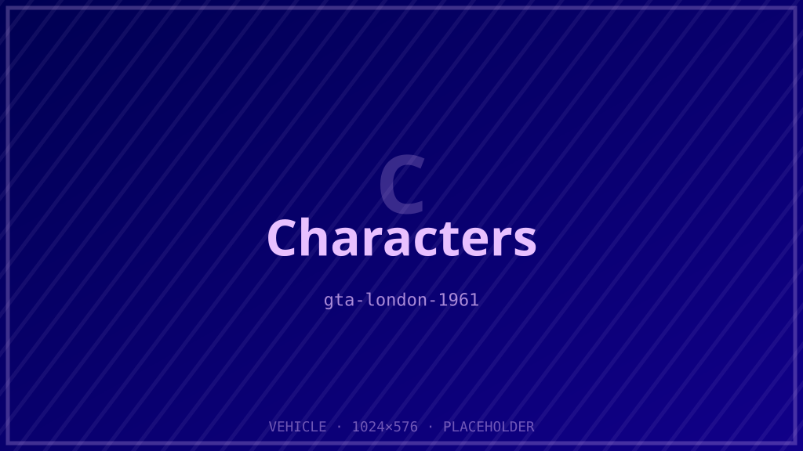
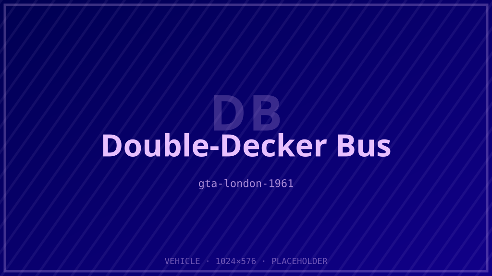
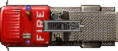
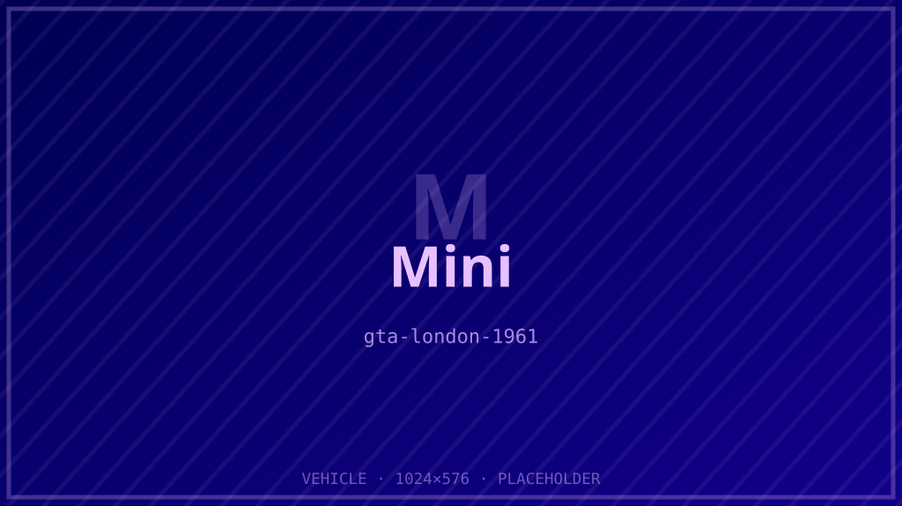
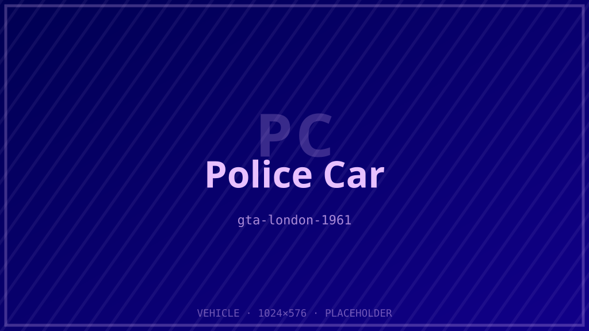
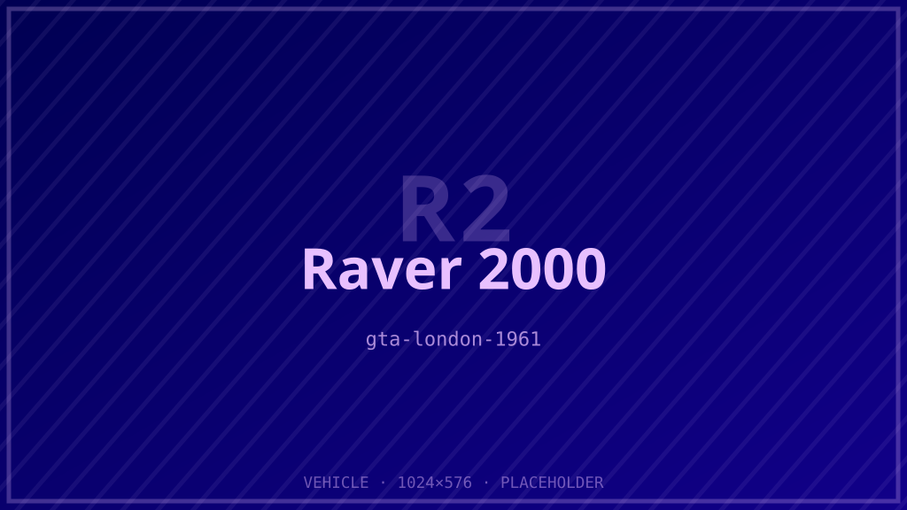
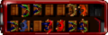
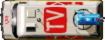
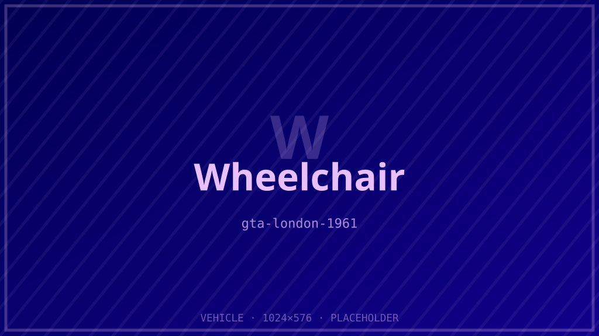
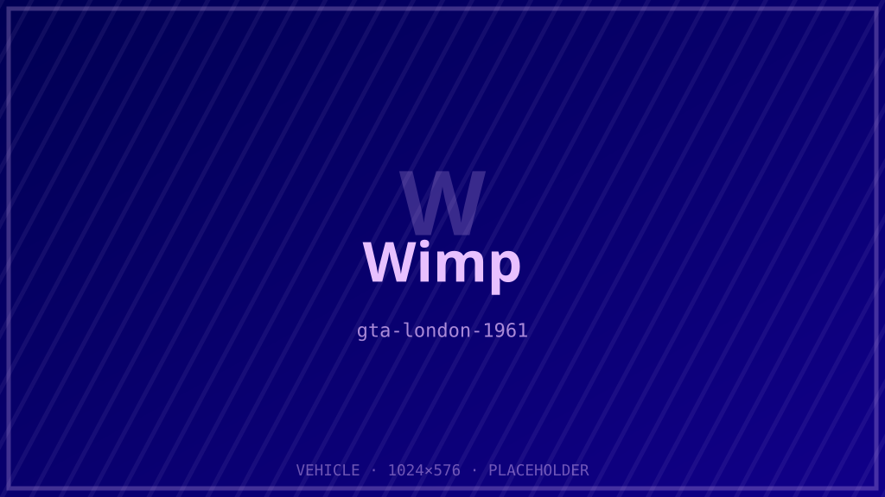

London 1961
Vehicles
 Ambulance Government and Emergency
Ambulance Government and Emergency- Beagle 3 4x4s, Lorries, and Vans
- Bentover Standard Cars
- Big Bends Sports Cars
- Bike Motorcycles
 Camper 4x4s, Lorries, and Vans
Camper 4x4s, Lorries, and Vans
Characters Navigation- Copper Government and Emergency
 Double Decker Public Service
Double Decker Public Service
Double-Decker Bus Industrial- Fab Standard Cars
 Fat Standard Cars
Fat Standard Cars- Ferocious 250 Sports Cars
- Ferocious 312 Sports Cars

Fire Truck Government and Emergency- Garden Shed Standard Cars
- Jug D Type Sports Cars
- Jug Swinger Sports Cars
- Lewd Lorry 4x4s, Lorries, and Vans
 London Cab Public Service
London Cab Public Service- MCMK2 Sports Cars

Mini Car Mod Scooter Motorcycles
Mod Scooter Motorcycles- Myni Standard Cars

Police Car Emergency- Porka 910 Sports Cars
- Potato Truck 4x4s, Lorries, and Vans
 Ranger 4x4s, Lorries, and Vans
Ranger 4x4s, Lorries, and Vans
Raver 2000 Standard Cars- Safari Standard Cars
- Spider Standard Cars
- Squealey Sports Cars
- Sweets Van 4x4s, Lorries, and Vans
- Tiger Tank Government and Emergency

Tour Bus Public Service- Tramp TR3 Sports Cars
- Tramp TR4 Sports Cars

TV Van Public Service- Voxel Concept Sports Cars

Wheelchair Miscellaneous
Wimp Standard Cars
| Image | Vehicle | Category | Class | Top speed (km/h) | Seats |
|---|---|---|---|---|---|
| Ambulance | Government and Emergency | Medical | — | 2 |
| Beagle 3 | 4x4s, Lorries, and Vans | — | — | — | |
| Bentover | Standard Cars | — | — | — | |
| Big Bends | Sports Cars | — | — | — | |
| Bike | Motorcycles | — | — | — | |
| Camper | 4x4s, Lorries, and Vans | — | — | — |
| Characters | Navigation | — | — | — | |
| Copper | Government and Emergency | — | — | — | |
| Double Decker | Public Service | — | — | — |
| Double-Decker Bus | Industrial | Bus | — | 4 | |
| Fab | Standard Cars | — | — | — | |
| Fat | Standard Cars | — | — | — |
| Ferocious 250 | Sports Cars | — | — | — | |
| Ferocious 312 | Sports Cars | — | — | — | |
| Fire Truck | Government and Emergency | — | — | — | |
| Garden Shed | Standard Cars | — | — | — | |
| Jug D Type | Sports Cars | — | — | — | |
| Jug Swinger | Sports Cars | — | — | — | |
| Lewd Lorry | 4x4s, Lorries, and Vans | — | — | — | |
| London Cab | Public Service | Taxi | — | 4 |
| MCMK2 | Sports Cars | — | — | — | |
| Mini | Car | Compact | — | 4 | |
| Mod Scooter | Motorcycles | — | — | — |
| Myni | Standard Cars | — | — | — | |
| Police Car | Emergency | Police | — | 4 | |
| Porka 910 | Sports Cars | — | — | — | |
| Potato Truck | 4x4s, Lorries, and Vans | — | — | — | |
| Ranger | 4x4s, Lorries, and Vans | — | — | — |
| Raver 2000 | Standard Cars | — | — | — | |
| Safari | Standard Cars | — | — | — | |
| Spider | Standard Cars | — | — | — | |
| Squealey | Sports Cars | — | — | — | |
| Sweets Van | 4x4s, Lorries, and Vans | — | — | — | |
| Tiger Tank | Government and Emergency | — | — | — | |
| Tour Bus | Public Service | — | — | — | |
| Tramp TR3 | Sports Cars | — | — | — | |
| Tramp TR4 | Sports Cars | — | — | — | |
| TV Van | Public Service | — | — | — | |
| Voxel Concept | Sports Cars | — | — | — | |
| Wheelchair | Miscellaneous | — | — | — | |
| Wimp | Standard Cars | — | — | — |